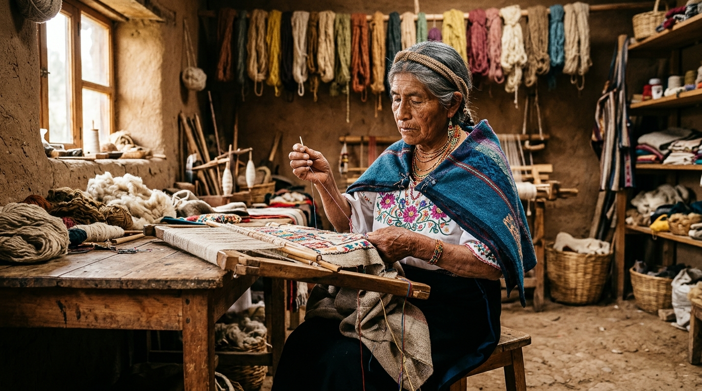
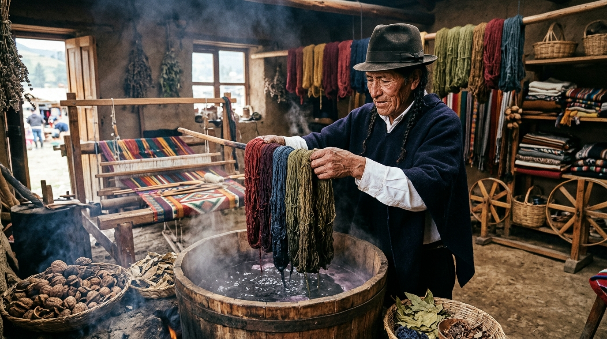
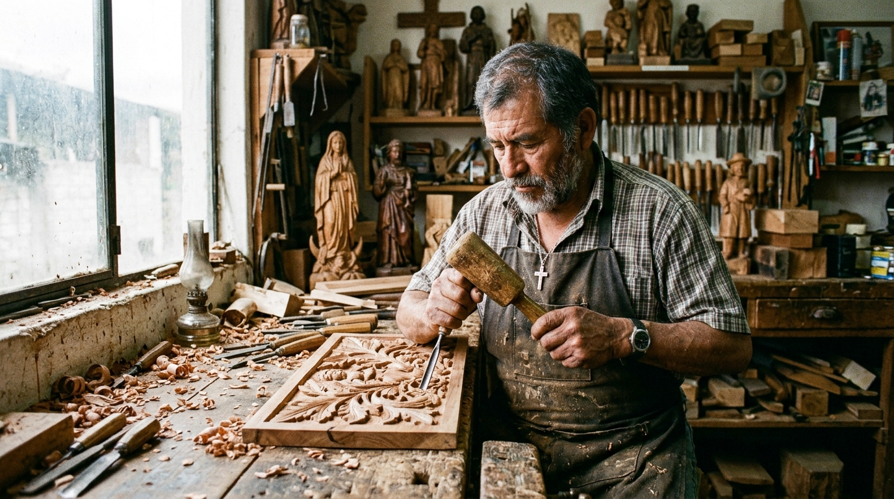

¿Cómo funciona el modelo de negocio?
Tú eres el puente: aprendes un oficio ancestral, nutres a la IA y todos ganan:
Ve al Taller y Registra con tu Teléfono
Aprendes con tus manos en la mesa del maestro. Usas las aplicaciones habituales de tu celular (grabadora de voz, fotos, videos y notas) para capturar sus técnicas y secretos sin incomodarlo con pantallas.
Sube tus Archivos y Nutre a la IA
Al volver a casa, compartes todo lo recopilado. La Inteligencia Artificial analiza los audios y fotos para estructurar un Programa de Estudio formal con criterios de calidad y un tutor virtual 24/7.
Modelo Ganar-Ganar (Monetiza el Curso)
¿Quieres vender el programa? Con el acuerdo del maestro, se publica en la plataforma para nuevos estudiantes: el 50% va al maestro, tú ganas comisión como aprendiz-creador y el saber no muere.
Maestros y Talleres Disponibles
Aprende directamente de artesanos mayores en sus propios talleres de trabajo

Tu Taller Activo 50% Maestro + Comisión AprendizMaestra Rosa Quilumba
Aprende a cortar telas tradicionales, sentir la tensión exacta del hilo con los dedos y rematar piezas sin que se desarmen al lavarlas.

Cupos Disponibles 50% Maestro + Comisión AprendizMaestro José Lema
Aprende a hervir cáscara de nogal y plantas nativas para fijar colores vivos en la lana, y arma la urdimbre de un telar indígena.

Próxima Apertura 50% Maestro + Comisión AprendizMaestro Carlos Morales
Domina el afilado a la piedra, aprende a leer la veta de la madera para no astillarla y esculpe figuras tradicionales paso a paso.
Guía de Preguntas para Grabar con tu Teléfono
Sesión 3 · Tensión y RematePreguntas técnicas clave para hacerle a la maestra mientras grabas el audio o tomas fotos con tu celular:
«Pregúntale a la maestra cómo prueba con los dedos el sentido del hilo para que la prenda no se deforme con el uso. Graba su explicación.»
«Toma una foto de cerca a sus manos mientras te muestra qué siente en los dedos antes de que la puntada empiece a arrugar la tela.»
«Graba un video corto de 30 segundos mientras asegura el último nudo dentro de la tela y anota la anécdota de cuando era joven.»
Qué Llevar al Taller Hoy
Revisa tu mochila antes de salir hacia Tocachi:
Hoy ayudarás a la Maestra Rosa a coser los forros de 4 bolsos que tiene pedidos para la feria de fin de semana.
Nutre a la IA con lo que Aprendiste en el Taller
En el taller no te distraes con páginas web: trabajas con tus manos y grabas con las aplicaciones habituales de tu teléfono (grabadora de voz, cámara y notas). Al regresar a tu computadora, comparte aquí todo tu material. La Inteligencia Artificial lo analizará para estructurar un Plan de Estudio profesional y entrenar a tu tutor virtual 24/7.
Grabados con la app de voz de tu celular
Manos, posturas, nudos y fibras
Tus observaciones y anécdotas
¿Qué deseas hacer con el programa que estás creando?
Todo depende del nivel de permiso acordado con la Maestra Rosa y su familia:
Programa de Aprendizaje: Sesión 3 Estructurada
Procesado: 24 min de audio grabados en Tocachi + 8 fotografías de taller + apuntes de campo
Cómo Saber si la Tensión de la Puntada es Perfecta
«Javier: hiciste muy buenas preguntas sobre cómo tensar el hilo y rematar el bolso. Sin embargo, olvidaste preguntarle qué tipo de cera usa para proteger el hilo del agua. Ya lo dejamos anotado como pregunta automática para tu clase del próximo martes.»
Pregúntale a tu Maestra en Casa
Tutor inteligente entrenado con los audios y fotos de la Maestra Rosa en TocachiCertificado de Aprobación en Taller
Avalado por el examen presencial y la firma física del Maestro Artesano
Por haber completado las horas prácticas en taller, nutrir el registro del saber tradicional y dominar el corte, la tensión y el remate, se otorga este certificado a:
Formado directamente con la Maestra Rosa Quilumba en Tocachi, cantón Pedro Moncayo. Registro de taller verificado #TOC-2026-004.
Reparto Ganar-Ganar del Programa Publicado
50% Maestro + Comisión AprendizLiquidación mensual del programa creado por Javier Quilumba con la Maestra Rosa Quilumba:
| Concepto | Estudiantes | Total Recaudado | 50% para la Maestra | Comisión Aprendiz-Autor | Estado de Pago |
|---|---|---|---|---|---|
| Curso de Confección Andina (Taller Tocachi) | 12 aprendices | $ 360,00 USD | $ 180,00 USD | $ 90,00 USD | Transferido |
| Consultas Técnicas al Tutor Inteligente | 48 consultas | $ 72,00 USD | $ 36,00 USD | $ 18,00 USD | Transferido |
| Total Mensual Liquidado | $ 216,00 USD | $ 108,00 USD | Pagos Acreditados | ||